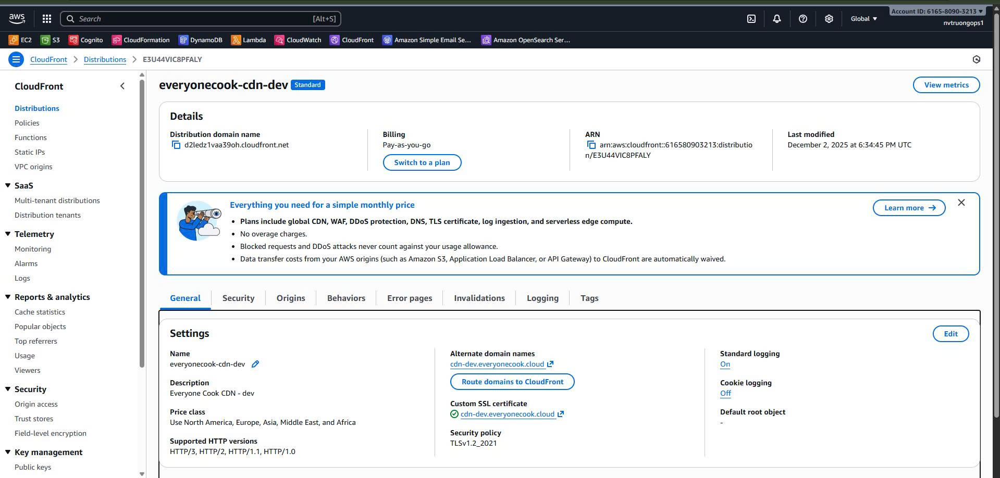
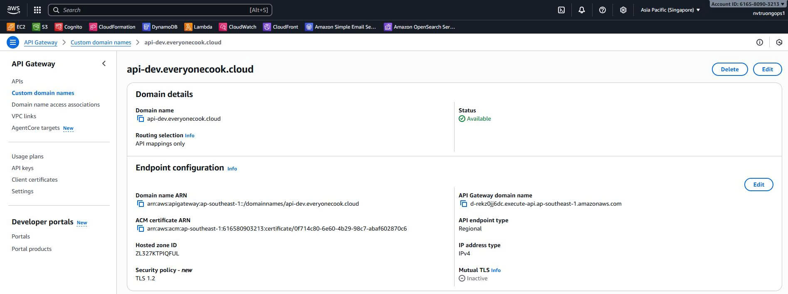

5.4.2 Certificate Stack
Certificate Stack - Chứng Chỉ ACM cho SSL/TLS
Tổng Quan
Certificate Stack là tầng hạ tầng Phase 1.5 của dự án EveryoneCook. Nó quản lý các chứng chỉ AWS Certificate Manager (ACM) cho CloudFront CDN và API Gateway, cung cấp mã hóa SSL/TLS cho mọi lưu lượng HTTPS.
Thứ Tự Triển Khai: Stack này BẮT BUỘC phải được triển khai sau DNS Stack và trước Core Stack và Backend Stack.
Yêu Cầu Region Quan Trọng: Stack này BẮT BUỘC phải được triển khai ở region us-east-1 vì CloudFront là dịch vụ toàn cầu chỉ có thể truy cập chứng chỉ ACM từ us-east-1.
Trách Nhiệm Chính
- Tạo chứng chỉ ACM cho CloudFront CDN (
cdn.everyonecook.cloudhoặccdn-dev.everyonecook.cloud) - Tạo chứng chỉ ACM wildcard cho API Gateway (
*.everyonecook.cloud) - Xác thực DNS tự động qua Route 53
- Export các Certificate ARN cho Core Stack và Backend Stack
Những Gì Stack Này KHÔNG Bao Gồm
- DNS records (được quản lý bởi DNS Stack - Phase 1)
- CloudFront distribution (được quản lý bởi Core Stack - Phase 2)
- API Gateway custom domain (được quản lý bởi Backend Stack - Phase 4)
- CloudFront WAF Web ACL (đã loại bỏ để tối ưu chi phí)
Kiến Trúc
┌─────────────────────────────────────────────────────────────────┐
│ Route 53 Hosted Zone │
│ everyonecook.cloud │
│ (từ DNS Stack) │
└───────────────────┬─────────────────────────────────────────────┘
│ DNS Validation
▼
┌─────────────────────────────────────────────────────────────────┐
│ AWS Certificate Manager (us-east-1) │
│ │
│ Certificate 1: CloudFront Certificate │
│ ├─ Domain: cdn.everyonecook.cloud (hoặc cdn-dev) │
│ ├─ Validation: DNS (Route 53) │
│ ├─ Status: Issued (5-10 phút) │
│ └─ Export: CloudFrontCertificateArn │
│ │
│ Certificate 2: API Gateway Wildcard Certificate │
│ ├─ Domain: *.everyonecook.cloud │
│ ├─ SAN: everyonecook.cloud │
│ ├─ Bao gồm: api.everyonecook.cloud, api-dev, api-staging │
│ ├─ Validation: DNS (Route 53) │
│ ├─ Status: Issued (5-10 phút) │
│ └─ Export: ApiGatewayCertificateArn │
│ │
│ Tối ưu chi phí: │
│ CloudFront WAF đã loại bỏ (-$9/tháng) │
│ Shield Standard (miễn phí, tự động bật) │
└─────────────────────────────────────────────────────────────────┘
│
│ Certificate ARN Exports
▼
┌───────────────────────┬
▼ ▼
Core Stack Backend Stack
(CloudFront) (API Gateway)
Cấu Hình Stack
Cấu Trúc File
infrastructure/lib/stacks/
└── certificate-stack.ts # Certificate Stack implementation
Triển Khai Code
File: infrastructure/lib/stacks/certificate-stack.ts
import * as cdk from 'aws-cdk-lib';
import * as acm from 'aws-cdk-lib/aws-certificatemanager';
import * as route53 from 'aws-cdk-lib/aws-route53';
import { Construct } from 'constructs';
import { BaseStack, BaseStackProps } from '../base-stack';
/**
* Certificate Stack cho CloudFront và API Gateway
*
* Stack này tạo các chứng chỉ ACM cho CloudFront và API Gateway.
*
* YÊU CẦU REGION QUAN TRỌNG:
* - CloudFront certificate: BẮT BUỘC ở us-east-1 (yêu cầu của CloudFront)
* - API Gateway certificate: Nên ở cùng region với API Gateway (ap-southeast-1)
*
* Stack này được triển khai ở us-east-1 để xử lý yêu cầu cross-region của CloudFront.
* Với API Gateway, chúng ta sử dụng wildcard certificate bao phủ api.everyonecook.cloud.
*
* Trách nhiệm:
* - Tạo chứng chỉ ACM cho CloudFront ở us-east-1
* - Tạo chứng chỉ ACM wildcard cho API Gateway ở us-east-1 (hoạt động toàn cầu)
* - Xác thực chứng chỉ qua Route 53 DNS
* - Export các certificate ARN để Core Stack và Backend Stack sử dụng
*
* LƯU Ý TỐI ƯU CHI PHÍ:
* - CloudFront WAF đã loại bỏ để tiết kiệm $9/tháng ($108/năm)
* - CloudFront vẫn được bảo vệ bởi Shield Standard (miễn phí, tự động bật)
* - API Gateway có đầy đủ bảo vệ WAF (BackendStack)
*/
export class CertificateStack extends BaseStack {
public readonly cloudFrontCertificate: acm.ICertificate;
public readonly apiGatewayCertificate: acm.ICertificate;
constructor(scope: Construct, id: string, props: BaseStackProps) {
super(scope, id, props);
// Thêm các tag đặc thù cho stack
cdk.Tags.of(this).add('StackType', 'Certificate');
cdk.Tags.of(this).add('Layer', 'Infrastructure');
cdk.Tags.of(this).add('CostCenter', `Certificate-${this.config.environment}`);
// Import Route 53 Hosted Zone từ DNS Stack
// Lưu ý: Không thể sử dụng Fn.importValue hoặc SSM Parameter cho cross-region references
// Hosted Zone ID là ổn định và không thay đổi, nên chúng ta hardcode nó
// Giá trị này đến từ DNS Stack output: Z018823421GWCSYG5UMHV
const hostedZoneId = 'Z018823421GWCSYG5UMHV';
const hostedZone = route53.HostedZone.fromHostedZoneAttributes(this, 'HostedZone', {
hostedZoneId: hostedZoneId,
zoneName: 'everyonecook.cloud',
});
// Tạo chứng chỉ ACM cho CloudFront
// Chứng chỉ này BẮT BUỘC ở us-east-1 để CloudFront sử dụng
this.cloudFrontCertificate = this.createCloudFrontCertificate(hostedZone);
// Tạo chứng chỉ ACM wildcard cho API Gateway
// Wildcard *.everyonecook.cloud bao phủ api.everyonecook.cloud
// Chứng chỉ này ở us-east-1 có thể được sử dụng bởi API Gateway ở bất kỳ region nào
this.apiGatewayCertificate = this.createApiGatewayCertificate(hostedZone);
// TỐI ƯU CHI PHÍ: CloudFront WAF đã loại bỏ
// CloudFront được bảo vệ bởi Shield Standard (miễn phí, tự động bật)
// API Gateway có đầy đủ bảo vệ WAF trong BackendStack
// Tiết kiệm: $9/tháng ($108/năm)
// Export các certificate ARN
this.exportOutputs();
}
/**
* Tạo chứng chỉ ACM cho CloudFront CDN
*
* QUAN TRỌNG: Stack này BẮT BUỘC phải được triển khai ở region us-east-1.
* CloudFront là dịch vụ toàn cầu nhưng control plane của nó ở us-east-1,
* nên nó chỉ có thể truy cập chứng chỉ từ us-east-1.
*
* Xác thực DNS là tự động qua Route 53.
* Xác thực thường mất 5-10 phút.
*
* @param hostedZone - Route 53 Hosted Zone cho DNS validation
* @returns ACM Certificate cho CloudFront
*/
private createCloudFrontCertificate(hostedZone: route53.IHostedZone): acm.Certificate {
const certificate = new acm.Certificate(this, 'CloudFrontCertificate', {
domainName: this.config.domains.cdn,
validation: acm.CertificateValidation.fromDns(hostedZone),
certificateName: `EveryoneCook-CloudFront-${this.config.environment}`,
});
// Thêm tags
cdk.Tags.of(certificate).add('Component', 'CloudFront');
cdk.Tags.of(certificate).add('Purpose', 'CDN-SSL');
return certificate;
}
/**
* Tạo chứng chỉ ACM wildcard cho API Gateway
*
* Tạo wildcard certificate (*.everyonecook.cloud) bao phủ:
* - api.everyonecook.cloud (API Gateway)
* - api-dev.everyonecook.cloud (API Gateway dev)
* - api-staging.everyonecook.cloud (API Gateway staging)
*
* Chứng chỉ này được tạo ở us-east-1 nhưng có thể được sử dụng bởi API Gateway
* ở bất kỳ region nào qua cross-region certificate reference.
*
* Xác thực DNS là tự động qua Route 53.
* Xác thực thường mất 5-10 phút.
*
* @param hostedZone - Route 53 Hosted Zone cho DNS validation
* @returns ACM Certificate cho API Gateway
*/
private createApiGatewayCertificate(hostedZone: route53.IHostedZone): acm.Certificate {
const certificate = new acm.Certificate(this, 'ApiGatewayCertificate', {
domainName: '*.everyonecook.cloud', // Wildcard bao phủ api.everyonecook.cloud
subjectAlternativeNames: ['everyonecook.cloud'], // Cũng bao phủ root domain
validation: acm.CertificateValidation.fromDns(hostedZone),
certificateName: `EveryoneCook-API-${this.config.environment}`,
});
// Thêm tags
cdk.Tags.of(certificate).add('Component', 'APIGateway');
cdk.Tags.of(certificate).add('Purpose', 'API-SSL');
return certificate;
}
/**
* Export stack outputs cho cross-stack references
*
* Exports:
* - CloudFrontCertificateArn: ACM Certificate ARN cho CloudFront (us-east-1)
* - ApiGatewayCertificateArn: ACM Certificate ARN cho API Gateway (us-east-1)
*
* ĐÃ LOẠI BỎ: CloudFrontWebAclArn (tối ưu chi phí)
*/
private exportOutputs(): void {
// Export CloudFront certificate ARN cho Core Stack
new cdk.CfnOutput(this, 'CloudFrontCertificateArn', {
value: this.cloudFrontCertificate.certificateArn,
exportName: this.exportName('CloudFrontCertificateArn'),
description: 'ACM Certificate ARN cho CloudFront (us-east-1)',
});
// Export CloudFront certificate domain để xác minh
new cdk.CfnOutput(this, 'CloudFrontCertificateDomain', {
value: this.config.domains.cdn,
description: 'Domain name cho CloudFront certificate',
});
// Export API Gateway certificate ARN cho Backend Stack
new cdk.CfnOutput(this, 'ApiGatewayCertificateArn', {
value: this.apiGatewayCertificate.certificateArn,
exportName: this.exportName('ApiGatewayCertificateArn'),
description: 'ACM Wildcard Certificate ARN cho API Gateway (us-east-1)',
});
// Export API Gateway certificate domain để xác minh
new cdk.CfnOutput(this, 'ApiGatewayCertificateDomain', {
value: '*.everyonecook.cloud',
description: 'Domain name cho API Gateway certificate (wildcard)',
});
}
}
Chi Tiết Cấu Hình Chính
1. Yêu Cầu Region
Quan Trọng: Stack này BẮT BUỘC phải được triển khai ở us-east-1:
// Trong infrastructure/bin/app.ts
const certificateStack = new CertificateStack(app, `${stackPrefix}-Certificate`, {
env: {
account: config.account,
region: 'us-east-1', // BẮT BUỘC là us-east-1 cho CloudFront
},
config,
description: `ACM Certificate cho CloudFront (${config.environment}) - us-east-1`,
});
Tại sao us-east-1?
- CloudFront là dịch vụ toàn cầu với control plane ở us-east-1
- CloudFront chỉ có thể truy cập chứng chỉ ACM từ us-east-1
- API Gateway wildcard certificate ở us-east-1 hoạt động toàn cầu
2. Certificate Domains
Stack tạo hai chứng chỉ với domain theo environment:
CloudFront Certificate:
// Dev environment
domainName: 'cdn-dev.everyonecook.cloud'
// Staging environment
domainName: 'cdn-staging.everyonecook.cloud'
// Production environment
domainName: 'cdn.everyonecook.cloud'
API Gateway Wildcard Certificate:
domainName: '*.everyonecook.cloud' // Bao phủ tất cả subdomain
subjectAlternativeNames: ['everyonecook.cloud'] // Cũng bao phủ root domain
// Bao phủ:
// - api.everyonecook.cloud
// - api-dev.everyonecook.cloud
// - api-staging.everyonecook.cloud
// - Bất kỳ *.everyonecook.cloud subdomain nào trong tương lai
3. Xác Thực DNS Tự Động
ACM tự động tạo DNS validation records trong Route 53:
validation: acm.CertificateValidation.fromDns(hostedZone)
Điều gì xảy ra:
- ACM tạo CNAME record trong Route 53 để xác thực
- Route 53 ngay lập tức phản hồi với validation record
- ACM xác minh record và cấp chứng chỉ
- Xác thực hoàn thành trong 5-10 phút (thường nhanh hơn)
4. Cross-Region Certificate Reference
Chứng chỉ được tạo ở us-east-1 được sử dụng bởi các stack khác ở ap-southeast-1:
// Trong Core Stack (ap-southeast-1) - import CloudFront certificate từ us-east-1
const certificate = acm.Certificate.fromCertificateArn(
this,
'ImportedCloudFrontCertificate',
'arn:aws:acm:us-east-1:616580903213:certificate/8d53776e-0480-47d2-a6ff-4fe9b2eb6534'
);
5. Tối Ưu Chi Phí - Loại Bỏ WAF
Quyết định: CloudFront WAF Web ACL đã loại bỏ để tiết kiệm chi phí:
// ĐÃ LOẠI BỎ: CloudFront WAF Web ACL
// Chi phí hàng tháng trước đây: $9/tháng = $108/năm
// Tình trạng bảo vệ:
// Shield Standard: Bảo vệ DDoS (miễn phí, tự động bật)
// CloudFront OAC: Chặn truy cập S3 trực tiếp
// Signed URLs: Bảo vệ nội dung riêng tư
// ❌ WAF: Đã loại bỏ (tối ưu chi phí)
Lý do:
- CloudFront chỉ phục vụ nội dung tĩnh (bề mặt tấn công thấp)
- Shield Standard cung cấp bảo vệ DDoS Layer 3/4 (miễn phí)
- API Gateway có đầy đủ bảo vệ WAF cho tấn công Layer 7
- Tiết kiệm: $9/tháng = $108/năm
Stack Outputs
Sau khi triển khai, stack export các giá trị sau:
| Output Name | Value | Sử dụng |
|---|---|---|
CloudFrontCertificateArn |
arn:aws:acm:us-east-1:616580903213:certificate/8d53776e-... |
Được Core Stack sử dụng cho CloudFront distribution |
CloudFrontCertificateDomain |
cdn.everyonecook.cloud (hoặc cdn-dev) |
Chỉ để xác minh |
ApiGatewayCertificateArn |
arn:aws:acm:us-east-1:616580903213:certificate/a1b2c3d4-... |
Được Backend Stack sử dụng cho API Gateway domain |
ApiGatewayCertificateDomain |
*.everyonecook.cloud |
Chỉ để xác minh (wildcard) |
Các Bước Triển Khai
Bước 1: Xác Minh Điều Kiện Tiên Quyết
Trước khi triển khai Certificate Stack, hãy đảm bảo:
- DNS Stack đã triển khai thành công
- Route 53 Hosted Zone tồn tại với nameserver chính xác
- Ủy quyền DNS từ Hostinger đã hoàn thành và lan truyền
Xác minh DNS đang hoạt động:
nslookup -type=NS everyonecook.cloud
Bước 2: Triển Khai Certificate Stack
Di chuyển đến thư mục infrastructure:
cd D:\Project_AWS\everyonecook\infrastructure
Triển khai Certificate Stack đến us-east-1:
# Triển khai Certificate Stack
npx cdk deploy EveryoneCook-dev-Certificate --context environment=dev
Quan trọng: Lưu ý region là us-east-1, không phải ap-southeast-1.
Kết quả mong đợi:
✨ Synthesis time: 6.12s
EveryoneCook-dev-Certificate: deploying...
[████████████████████████████████████████] (3/3)
EveryoneCook-dev-Certificate: creating CloudFormation changeset...
EveryoneCook-dev-Certificate
✨ Deployment time: 125.34s
Outputs:
EveryoneCook-dev-Certificate.CloudFrontCertificateArn =
arn:aws:acm:us-east-1:616580903213:certificate/8d53776e-0480-47d2-a6ff-4fe9b2eb6534
EveryoneCook-dev-Certificate.CloudFrontCertificateDomain = cdn-dev.everyonecook.cloud
EveryoneCook-dev-Certificate.ApiGatewayCertificateArn =
arn:aws:acm:us-east-1:616580903213:certificate/a1b2c3d4-5678-90ef-ghij-klmnopqrstuv
EveryoneCook-dev-Certificate.ApiGatewayCertificateDomain = *.everyonecook.cloud
Stack ARN:
arn:aws:cloudformation:us-east-1:616580903213:stack/EveryoneCook-dev-Certificate/...
Bước 3: Chờ Xác Thực Certificate
Chứng chỉ ACM yêu cầu xác thực DNS. Quá trình này mất 5-10 phút:
- ACM tạo CNAME validation records trong Route 53
- Route 53 phản hồi với dữ liệu xác thực
- ACM xác minh và cấp chứng chỉ
- Trạng thái thay đổi từ “Pending validation” thành “Issued”
Bạn có thể theo dõi tiến trình xác thực trong AWS Console.
Bước 4: Xác Minh trong AWS Console
Điều hướng đến ACM (region us-east-1)
- Mở AWS Console
- QUAN TRỌNG: Chuyển region sang N. Virginia (us-east-1)
- Điều hướng đến Certificate Manager
 Chuyển AWS Console sang region us-east-1 trước khi xem chứng chỉ
Chuyển AWS Console sang region us-east-1 trước khi xem chứng chỉ
Xác Minh CloudFront Certificate
- Tìm certificate với domain
cdn-dev.everyonecook.cloud - Kiểm tra trạng thái là Issued
- Xác minh DNS validation records đã có mặt
 Chứng chỉ ACM cho CloudFront hiển thị trạng thái “Issued”, tên domain, phương thức xác thực (DNS), và CNAME validation record
Xác Minh API Gateway Wildcard Certificate
- Tìm certificate với domain
*.everyonecook.cloud - Kiểm tra trạng thái là Issued
- Xác minh nó bao phủ wildcard và SAN (everyonecook.cloud)

Chứng chỉ ACM Wildcard cho API Gateway hiển thị domain *.everyonecook.cloud, SAN everyonecook.cloud, và validation records
Xác Minh DNS Validation Records trong Route 53
- Điều hướng đến Route 53 > Hosted zones
- Chọn
everyonecook.cloudhosted zone - Xác minh CNAME validation records đã được tạo
 Route 53 hiển thị CNAME validation records tự động được tạo bởi ACM để xác thực chứng chỉ
Route 53 hiển thị CNAME validation records tự động được tạo bởi ACM để xác thực chứng chỉ
Records mong đợi:
_abc123def456.cdn-dev.everyonecook.cloud CNAME _xyz789.acm-validations.aws.
_ghi789jkl012.everyonecook.cloud CNAME _mno345.acm-validations.aws.
Chi Tiết Chi Phí
Chi Phí Hàng Tháng
| Tài nguyên | Chi phí | Ghi chú |
|---|---|---|
| Chứng chỉ ACM | $0/tháng | Miễn phí cho chứng chỉ sử dụng với dịch vụ AWS |
| DNS Validation Records | $0/tháng | Bao gồm trong chi phí Route 53 hosted zone |
| Gia hạn chứng chỉ | $0/tháng | Gia hạn tự động (miễn phí) |
| Tổng | $0/tháng | 100% miễn phí (không có chi phí liên tục) |
Tối Ưu Chi Phí
- Chứng chỉ ACM miễn phí khi sử dụng với CloudFront, API Gateway, ALB, v.v.
- Gia hạn tự động (không cần can thiệp thủ công)
- CloudFront WAF đã loại bỏ để tiết kiệm $9/tháng ($108/năm)
- Shield Standard cung cấp bảo vệ DDoS miễn phí
Tiết Kiệm Hàng Năm từ Loại Bỏ WAF: $108/năm
Cross-Stack Dependencies
Import từ DNS Stack
Certificate Stack import từ DNS Stack:
// Hardcoded Hosted Zone ID (ổn định, không thay đổi)
const hostedZoneId = 'Z018823421GWCSYG5UMHV';
const hostedZone = route53.HostedZone.fromHostedZoneAttributes(this, 'HostedZone', {
hostedZoneId: hostedZoneId,
zoneName: 'everyonecook.cloud',
});
Tại sao Hardcoded?
- Không thể sử dụng
Fn.importValuecho cross-region references (us-east-1 ← ap-southeast-1) - Hosted Zone ID ổn định và không bao giờ thay đổi
- Thay thế: Sử dụng SSM Parameter Store (phức tạp hơn, kết quả giống nhau)
Export Được Sử Dụng Bởi Các Stack Khác
Certificate Stack export được sử dụng bởi:
-
Core Stack (Phase 2)
- Import:
CloudFrontCertificateArn - Mục đích: Gắn chứng chỉ SSL vào CloudFront distribution
- Region: ap-southeast-1 (cross-region import)
- Import:
-
Backend Stack (Phase 4)
- Import:
ApiGatewayCertificateArn - Mục đích: Tạo API Gateway custom domain với SSL
- Region: ap-southeast-1 (cross-region import)
- Import:
Luồng Dependency
DNS Stack (ap-southeast-1)
│
├─ Hosted Zone ID: Z018823421GWCSYG5UMHV
│
▼
Certificate Stack (us-east-1) ← BẮT BUỘC là us-east-1
│
├─ CloudFront Certificate ARN
│ └─► Core Stack (ap-southeast-1)
│
└─ API Gateway Certificate ARN
└─► Backend Stack (ap-southeast-1)
Danh Sách Kiểm Tra Xác Thực
Trước khi tiến hành triển khai Core Stack:
- Certificate Stack đã triển khai đến region us-east-1
- Trạng thái CloudFront certificate là Issued
- Trạng thái API Gateway wildcard certificate là Issued
- DNS validation CNAME records hiển thị trong Route 53
- Certificate ARN đã export trong CloudFormation outputs
- Region được xác nhận là us-east-1 trong AWS Console
- Tags được áp dụng chính xác cho tất cả tài nguyên
Các Bước Tiếp Theo
Sau khi triển khai thành công Certificate Stack:
➡️ 5.4.3 Core Stack - Tạo DynamoDB, S3, và CloudFront infrastructure
Core Stack sẽ:
- Tạo DynamoDB Single Table với mã hóa
- Tạo S3 buckets cho nội dung và CDN logs
- Tạo CloudFront distribution với chứng chỉ SSL
- Import
CloudFrontCertificateArntừ stack này - Cấu hình custom domain
cdn.everyonecook.cloud
Tài Liệu Tham Khảo
- Mã nguồn:
infrastructure/lib/stacks/certificate-stack.ts - Base Stack:
infrastructure/lib/base-stack.ts - Cấu hình App:
infrastructure/bin/app.ts - Tài liệu AWS:
- Cross-Region References: CloudFormation Cross-Region References